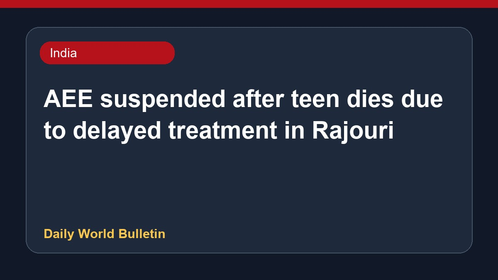

AEE suspended after teen dies due to delayed treatment in Rajouri

An Assistant Executive Engineer has been suspended and an Executive Engineer's salary withheld following the death of a seventeen-year-old girl in Jammu and Kashmir's Rajouri district. The sick teenager tragically passed away after her ambulance got stuck in mud for hours due to a blocked road under the Pradhan Mantri Gram Sadak Yojana in the Kotranka area. Authorities took strict action over the alleged negligence concerning road restoration work that hindered timely medical assistance, resulting in widespread concern and official inquiries into the incident.
Original source: India News Sources
AEE suspended as girl dies due to delay in treatment - Daily Excelsior ↗
AEE suspended as girl dies due to delay in treatment - Daily Excelsior ↗